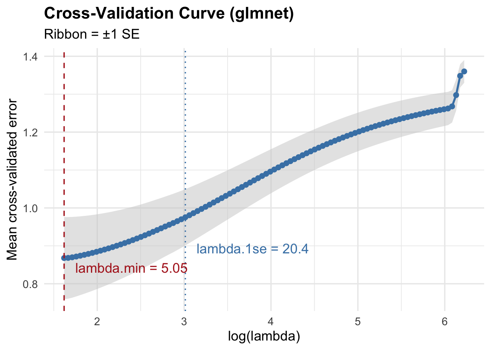

View libraries and data used in these notes
library(tidyverse)
colon = read_csv("https://sta221-fa25.github.io/data/colon.csv")
annotations = read_csv("https://sta221-fa25.github.io/data/mapped_annotations.csv")library(tidyverse)
colon = read_csv("https://sta221-fa25.github.io/data/colon.csv")
annotations = read_csv("https://sta221-fa25.github.io/data/mapped_annotations.csv")The data below are microarray data from the colons of 62 individuals. The data were curated by Alon et al. (1999) and were analyzed in a regression setting by Liang et al. (2013). Microarrays detect the gene expression levels of thousands of biological interactions. Expression levels are detected at targeted DNA probes that adhere directly to the array.
dim(colon)[1] 62 1912colon %>%
select(1:5) %>%
glimpse()Rows: 62
Columns: 5
$ y <dbl> -1, 1, -2, 2, -3, 3, -4, 4, -5, 5, -6, 6, -7, 7, -8, 8, -9, …
$ Hsa.3004 <dbl> 8589.416, 9164.254, 3825.705, 6246.449, 3230.329, 2510.325, …
$ Hsa.13491 <dbl> 5468.241, 6719.529, 6970.361, 7823.534, 3694.450, 1960.655, …
$ Hsa.37254 <dbl> 4064.936, 3718.159, 4705.650, 3975.564, 3463.586, 3072.816, …
$ Hsa.541 <dbl> 1997.893, 2015.221, 1166.554, 2002.613, 2181.420, 1810.205, …y: identity of the 62 tissues sampled. The numbers correspond to patients, a positive sign to a normal tissue, and a negative sign to a tumor tissue.The rest of the columns contains the expression of the 1911 genes with highest minimal gene expression “intensity” across the 62 tissues. Columns are named based on genetic probe IDs. Partial matching information about some of the probe IDs can be found in the file mapped_annotations.csv.
annotations %>%
glimpse()Rows: 2,308
Columns: 8
$ ProbeID <chr> "Hsa.3004", "Hsa.13491", "Hsa.13491", "Hsa.13491", "Hs…
$ Accession <chr> "H55933", "R39465", "R39465", "R39465", "R39465", "R85…
$ Region <chr> "3' UTR", "3' UTR", "3' UTR", "3' UTR", "3' UTR", "3' …
$ Other1 <chr> "1", "2a", "2a", "2a", "2a", "2a", "1", "2a", "2a", "1…
$ UniGeneID <dbl> 203417, 23933, 23933, 23933, 23933, 180093, NA, 124094…
$ GeneDescription <chr> "H.sapiens mRNA for homologue to yeast ribosomal prote…
$ SYMBOL <chr> NA, NA, NA, NA, NA, NA, "RPS29", NA, NA, NA, NA, NA, N…
$ GENENAME <chr> NA, NA, NA, NA, NA, NA, "ribosomal protein S29", NA, N…colon =
colon %>%
mutate(y = ifelse(y < 0, "tumor", "normal"))
colon %>%
count(y)# A tibble: 2 × 2
y n
<chr> <int>
1 normal 22
2 tumor 40X = colon[,-1] %>%
as.matrix() # matrix important for glmnet later
A = cor(X) - diag(1, nrow = ncol(X))
max(A)[1] 0.9865134colon %>%
ggplot(aes(x = y, y = Hsa.36689)) +
geom_boxplot() +
theme_bw() +
labs(x = "Tissue", y = "Expression level", title = "Expression of Hsa.36689 by tissue") 
We want \(y\) to be formatted as 0 or 1. Which should be 0 and which should be 1 if we want to know the effect of a gene on presence of a tumor?
y = colon %>%
select(y) %>%
mutate(y = ifelse(y == "tumor", 1, 0)) %>%
pull()
y [1] 1 0 1 0 1 0 1 0 1 0 1 0 1 0 1 0 1 0 1 0 1 0 1 0 1 1 1 1 1 1 1 1 1 1 1 1 1 1
[39] 0 1 1 0 0 1 1 1 1 0 1 0 0 1 1 0 0 1 1 1 1 0 1 0glmnetInstead of hard-coding lambda, the efunction cv.glmnet fits the model for a range of lambdas using nfold cross-validation. See ?glmnet::cv.glmnet
set.seed(221)
cvfit <- glmnet::cv.glmnet(X, y, alpha = 0,
intercept = FALSE,
family = "binomial",
nfold = 10)
cvfit
Call: glmnet::cv.glmnet(x = X, y = y, nfolds = 10, alpha = 0, intercept = FALSE, family = "binomial")
Measure: Binomial Deviance
Lambda Index Measure SE Nonzero
min 5.046 100 0.8679 0.10824 1911
1se 20.372 70 0.9754 0.07419 1911Binomial deviance is \(-2 \log\text{likelihood}\).
“Min lambda” is the lambda value that gives minimum cross-validated error.
“1se lambda” is the largest lambda that is within 1 standard error of the minimum.
cvfit contains
cvfit$lambda - all \(\lambda\) values fitted
cvfit$cvm - mean CV error at each \(\lambda\)
cvfit$cvsd - standard error of CV error
cvfit$lambda.min - minimum lambda
cvfit$lambda.1se - 1se lambda

plot(cvfit)
beta_min = coef(cvfit, s = "lambda.min")
beta_min_mat = as.matrix(beta_min)
beta_min_mat %>%
as.data.frame() %>%
arrange((dplyr::desc(abs(lambda.min)))) %>%
mutate(num = 1:nrow(beta_min_mat)) %>%
filter(num <= 20) %>%
rownames_to_column(var = "ProbeID") %>%
left_join(annotations, by = c("ProbeID" = "ProbeID")) ProbeID lambda.min num Accession Region Other1 UniGeneID
1 Hsa.8839 -0.0004173535 1 T40578 3' UTR 2a 60630
2 Hsa.17213 -0.0003902532 2 R35903 3' UTR 2a 137063
3 Hsa.21195 -0.0003227416 3 R06601 3' UTR 2a 126458
4 Hsa.17901 -0.0002572498 4 T89666 3' UTR 2a 116364
5 Hsa.1454 -0.0002570764 5 M82919 gene 1 NA
6 Hsa.43331 -0.0002451515 6 H64807 3' UTR 2a 238555
7 Hsa.1095 0.0002268786 7 U01038 gene 1 NA
8 Hsa.826 -0.0002248520 8 M55422 gene 1 NA
9 Hsa.44244 -0.0002103306 9 H78386 3' UTR 2a 233583
10 Hsa.12241 -0.0002083625 10 T64012 3' UTR 2a 79817
11 Hsa.24877 -0.0002004979 11 R33481 3' UTR 2a 136322
12 Hsa.1660 0.0001947283 12 H55916 3' UTR 1 204131
13 Hsa.1878 0.0001922622 13 M80359 gene 1 NA
14 Hsa.636 0.0001904497 14 M76558 gene 1 NA
15 Hsa.56 0.0001898483 15 D00860 gene 1 NA
16 Hsa.1491 0.0001895450 16 M35531 gene 1 NA
17 Hsa.2012 0.0001877903 17 M81651 gene 1 NA
18 Hsa.9683 0.0001864561 18 T49647 3' UTR 2a 67762
19 Hsa.1079 -0.0001861159 19 M64231 gene 1 NA
20 Hsa.3026 0.0001842197 20 X83301 gene 1 NA
GeneDescription
1 40S RIBOSOMAL PROTEIN S6 (Homo sapiens)
2 INTERLEUKIN-1 RECEPTOR, TYPE II PRECURSOR (Mus musculus)
3 METALLOTHIONEIN-II (Homo sapiens)
4 INTERLEUKIN-6 RECEPTOR BETA CHAIN PRECURSOR (Homo sapiens)
5 Human gamma amino butyric acid (GABAA) receptor beta-3 subunit mRNA, complete cds.
6 PLACENTAL FOLATE TRANSPORTER (Homo sapiens)
7 Human pLK mRNA, complete cds.
8 Human Krueppel-related zinc finger protein (H-plk) mRNA, complete cds.
9 INTERLEUKIN-1 RECEPTOR, TYPE II PRECURSOR (Homo sapiens)
10 ACETYLCHOLINE RECEPTOR PROTEIN, DELTA CHAIN PRECURSOR (Xenopus laevis)
11 TRANSCRIPTION FACTOR ATF-A AND ATF-A-DELTA (Homo sapiens)
12 PEPTIDYL-PROLYL CIS-TRANS ISOMERASE, MITOCHONDRIAL PRECURSOR (HUMAN);.
13 PUTATIVE SERINE/THREONINE-PROTEIN KINASE P78 (HUMAN);contains MSR1 repetitive element ;.
14 Human neuronal DHP-sensitive, voltage-dependent, calcium channel alpha-1D subunit mRNA, complete cds.
15 RIBOSE-PHOSPHATE PYROPHOSPHOKINASE I (HUMAN);.
16 Human GDP-L-fucose:beta-D-galactoside 2-alpha-l-fucosyltransferase mRNA, complete cds.
17 Human semenogelin II (SEMGII) gene, complete cds.
18 MYRISTOYLATED ALANINE-RICH C-KINASE SUBSTRATE (Homo sapiens)
19 Human spermidine synthase gene, complete cds.
20 H.sapiens SMA5 mRNA.
SYMBOL GENENAME
1 <NA> <NA>
2 <NA> <NA>
3 <NA> <NA>
4 <NA> <NA>
5 GABRB3 gamma-aminobutyric acid type A receptor subunit beta3
6 <NA> <NA>
7 PLK1 polo like kinase 1
8 ZNF117 zinc finger protein 117
9 <NA> <NA>
10 <NA> <NA>
11 <NA> <NA>
12 <NA> <NA>
13 MARK3 microtubule affinity regulating kinase 3
14 CACNA1D calcium voltage-gated channel subunit alpha1 D
15 PRPS1 phosphoribosyl pyrophosphate synthetase 1
16 FUT1 fucosyltransferase 1 (H blood group)
17 <NA> <NA>
18 <NA> <NA>
19 <NA> <NA>
20 GUSBP15 GUSB pseudogene 15